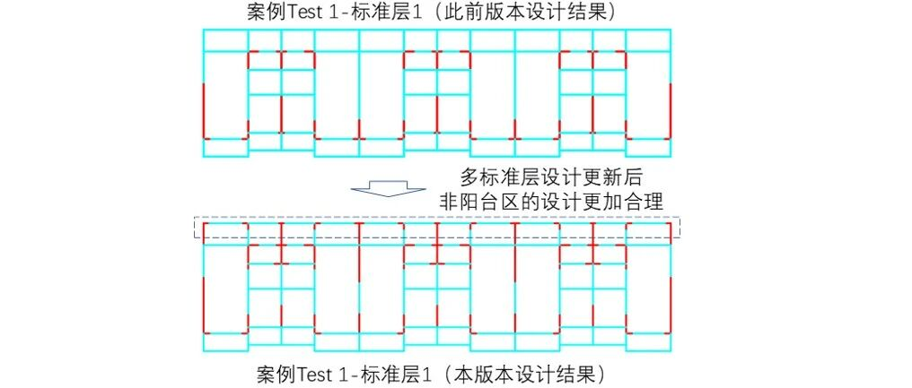

AIstructure-Copilot-v0.2.4：新增错误提示功能，并更新多标准层设计功能
0
功能简介
(1) 新增了软件操作过程中详细的错误提示功能，便于用户快速掌握错误原因。
(2) 更新了多标准层设计的功能，更好的保证了多标准层剪力墙和梁构件的布置合理性。
(3) 完善了软件安装方式，修复了因为注册表和Ribbon功能界面导致安装失败的bug。

增加了设计过程提示和错误提示

更新了多标准层设计的功能
1
登录注册系统改进
由于更换了后台系统，2024年3月29日之前注册的用户密码重置为123456，如需修改密码可在此界面修改密码模块进行修改；同时，在CAD登录界面增加更换密码提示。如下图：

在登录界面新增修改密码功能，用户可在此界面通过手机号和验证码对密码进行直接修改。当然，ai-structure网站也提供了密码更新的功能。如下图：


2
提供更多操作提示，便捷智能设计
在剪力墙智能设计前新增多项数据校验，确保设计结果更加准确。智能设计界面增加更多提示，避免出现界面卡顿时间过长的情况。详细介绍如下：
2.1 AI-structure的CAD界面
（1）多标准层设置校验
如果标准层或自然层为空，则弹出错误提示框："（E.0.0.4）多标准层错误，当前标准层或自然层设置为空，请返回参数设置重新设置"。如下图：

如果标准层或自然层个数为1，则弹出警告提示框："（W.0.0.2）多标准层、多自然层警告，只有一个标准层或自然层，是否继续设计？" 如下图：

（2）建筑外轮廓校验
剪力墙结构智能设计时：框选所有标准层的构件和空间对象后，点击鼠标右键或回车，程序将自动进行外轮廓校验，如果出现未闭合轴线，则弹出警告提在剪力墙结构智能设计时，示框："（W.0.0.0）轴线提取警告，外轮廓轴线未封闭，请返回前处理，检查后手动封闭"。如下图：

（3）建筑平面尺寸校验
剪力墙结构智能设计时：框选第一个标准层所有对象后，点击鼠标右键或回车，程序将自动进行尺寸校验，如果尺寸超过51m×25m，则弹出警告提示框："（W.0.0.3）平面尺寸警告，超过51m×25m，暂不支持GAN算法，其余算法可正常设计，是否继续设计？" 如下图：

（4）建筑空间信息校验
剪力墙结构智能设计时：如果当前选择标准层对象中未包含任何建筑空间信息，则弹出警告提示框 "（W.0.0.1）空间提取警告没有任何空间特征，是否继续设计？" 如下图：

（5）建筑构件轴线校验
剪力墙结构智能设计时：如果当前选择标准层对象中未包含任何建筑墙，程序将提示建筑墙识别错误，请返回前处理。如下图：

2.2 云端智能设计
（1）设计文件上传
剪力墙结构智能设计时：框选所有实体及基准点后，弹出文件上传框。如下图：

在文件上传过程中，如果出现当前账号在其他地方重复登录，或校验码过期，将弹出错误提示框：“（E.2.0.0）token校验失败，请重新登录或联系管理员（QQ群：741840451）”。如下图：

（2）剪力墙智能设计
文件上传成功之后，进入剪力墙智能设计阶段，此阶段需要等待几十秒到一百多秒不等，根据多标准层个数及每个标准层中构件的复杂程度而定。如下图：

（3）结果绘制
在剪力墙智能设计完成后，进入图纸绘制阶段，此阶段将检测剪力墙设计结果，并返回不同AI算法的最终设计情况。如果四种AI算法全部正常设计，则将其依次绘制在原图像右侧，最后弹出设计成功提示框。如下图：


在剪力墙智能设计完成后，进入图纸绘制阶段，此阶段将检测剪力墙设计结果，并返回不同AI算法的最终设计情况。如果四种AI算法全部正常设计，则将其依次绘制在原图像右侧，最后弹出设计成功提示框。如下图：


如果四种AI算法均设计失败，程序将弹出错误提示框，并描述具体错误信息，可通过修改前处理结果或QQ群联系管理员进行问题解决，原图像右侧将不再绘制任何结果。如下图：

3
多标准层剪力墙智能设计改进
我们发现部分案例的不同标准层差异较大时，设计的剪力墙和梁结构布置不够合理。因此，我们更新了多标准层设计算法。前处理改进前后效果对比如下：

案例Test 1-标准层3（此前版本设计结果，未经人工调整，上半部分的剪力墙偏少）

案例Test 1-标准层3（本版本设计结果，未经人工调整，上半部分的剪力墙布置更为合理）

案例Test 1-标准层2（此前版本设计结果，未经人工调整）

案例Test 1-标准层2（本版本设计结果，未经人工调整）

案例Test 1-标准层1（此前版本设计结果，未经人工调整）

案例Test 1-标准层1（本版本设计结果，未经人工调整）
4
智能设计云平台使用提示
目前，为了保证网站的安全性，AIstructure平台采用的是https协议，正确网址为：https://ai-structure.com。

虽然http协议对应的网站同样能提供相应服务，但是浏览器会提示不安全，如下图所示，同时部分功能使用可能会遇到浏览器阻止的问题，如有问题，请大家先切换至https协议网站。

5
结语
我们新增了剪力墙结构智能设计过程中的相关提示，给用户更多的反馈；完善了多标准层设计，更好的保证了多标准层剪力墙和梁构件的布置合理性。

后续，我们还将不断完善相关产品功能。欢迎大家持续关注我们的工作，多多支持！
温馨提示：为更好使用AI设计工具，请仔细阅读使用说明书。
联系方式
QQ群，AI-structure-交流群：741840451
AIstructure-Copilot-v0.2.2：梁布置设计功能更新(20240308)
AIstructure-Copilot-v0.1.7功能更新：实现多标准层的PKPM/YJK自动建模(20231222)
AIstructure-Copilot实现“三驾马车”驱动：Diffusion Model智能设计上线！(20231103)
AIstructure-Copilot-v0.1.2更新：精细化考虑抗震设计条件影响的全新GNN版本，请您来试试(20230928)
ai-structure.com：剪力墙结构材料用量AI预测模块上线测试(20230731)
AIstructure-Copilot：嵌入CAD平台的结构智能设计助手(20230711)
建筑结构生成式智能设计在日内瓦国际发明展上获“评审团特别嘉许金奖”(20230519)
ai-structure.com：土木工程自然语言规则AI解译模块上线测试(20230513)
AI剪力墙设计问卷调查结果(20230508)
相关论文
Liao WJ, Lu XZ, Huang YL, Zheng Z, Lin YQ, Automated structural design of shear wall residential buildings using generative adversarial networks, Automation in Construction, 2021, 132, 103931. DOI: 10.1016/j.autcon.2021.103931.
Lu XZ, Liao WJ, Zhang Y, Huang YL, Intelligent structural design of shear wall residence using physics-enhanced generative adversarial networks, Earthquake Engineering & Structural Dynamics, 2022, 51(7): 1657-1676. DOI: 10.1002/eqe.3632.
Zhao PJ, Liao WJ, Xue HJ, Lu XZ, Intelligent design method for beam and slab of shear wall structure based on deep learning, Journal of Building Engineering, 2022, 57: 104838. DOI: 10.1016/j.jobe.2022.104838.
Liao WJ, Huang YL, Zheng Z, Lu XZ, Intelligent generative structural design method for shear-wall building based on “fused-text-image-to-image” generative adversarial networks, Expert Systems with Applications, 2022, 118530, DOI: 10.1016/j.eswa.2022.118530.
Fei YF, Liao WJ, Zhang S, Yin PF, Han B, Zhao PJ, Chen XY, Lu XZ, Integrated schematic design method for shear wall structures: a practical application of generative adversarial networks, Buildings, 2022, 12(9): 1295. DOI: 10.3390/buildings1209129.
Fei YF, Liao WJ, Huang YL, Lu XZ, Knowledge-enhanced generative adversarial networks for schematic design of framed tube structures, Automation in Construction, 2022, 144: 104619. DOI: 10.1016/j.autcon.2022.104619.
Zhao PJ, Liao WJ, Huang YL, Lu XZ, Intelligent design of shear wall layout based on attention-enhanced generative adversarial network, Engineering Structures, 2023, 274, 115170. DOI: 10.1016/j.engstruct.2022.115170.
Zhao PJ, Liao WJ, Huang YL, Lu XZ, Intelligent beam layout design for frame structure based on graph neural networks, Journal of Building Engineering, 2023, 63, Part A: 105499. DOI: 10.1016/j.jobe.2022.105499.
Zhao PJ, Liao WJ, Huang YL, Lu XZ, Intelligent design of shear wall layout based on graph neural networks, Advanced Engineering Informatics, 2023, 55, 101886, DOI: 10.1016/j.aei.2023.101886
Liao WJ, Wang XY, Fei YF, Huang YL, Xie LL, Lu XZ*, Base-isolation design of shear wall structures using physics-rule-co-guided self-supervised generative adversarial networks, Earthquake Engineering & Structural Dynamics, 2023, DOI:10.1002/eqe.3862.
Feng YT, Fei YF, Lin YQ, Liao WJ, Lu XZ, Intelligent generative design for shear wall cross-sectional size using rule-Embedded generative adversarial network, Journal of Structural Engineering-ASCE, 2023, 149(11). 04023161. DOI:10.1061/JSENDH.STENG-12206.
Fei YF, Liao WJ, Lu XZ*, Guan H*, Knowledge-enhanced graph neural networks for construction material quantity estimation of reinforced concrete buildings, Computer-Aided Civil and Infrastructure Engineering, 2023, DOI: 10.1111/mice.13094.
Zhao PJ, Fei YF, Huang YL, Feng YT, Liao WJ, Lu XZ*, Design-condition-informed shear wall layout design based on graph neural networks, Advanced Engineering Informatics, 2023, 58: 102190. DOI: 10.1016/j.aei.2023.102190.
Fei YF, Liao WJ, Lu XZ*, Taciroglu E, Guan H, Semi-supervised learning method incorporating structural optimization for shear-wall structure design using small and long-tailed datasets, Journal of Building Engineering, 2023, DOI：10.1016/j.jobe.2023.107873
Liao WJ, Lu XZ*, Fei YF, Gu Y, Huang YL, Generative AI design for building structures, Automation in Construction, 2024, 157: 105187. DOI: 10.1016/j.autcon.2023.105187
Zhao PJ, Liao WJ, Huang YL, Lu XZ*, Beam layout design of shear wall structures based on graph neural networks, Automation in Construction, 2024, 158: 105223. DOI: 10.1016/j.autcon.2023.105223
Qin SZ, Liao WJ*, Huang SN, Hu KG, Tan Z, Gao Y, Lu XZ, AIstructure-Copilot: assistant for generative AI-driven intelligent design of building structures, Smart Construction, 2024, DOI: 10.55092/sc20240001

学术报告视频
公众号文章